feedforward neural networks is a wider term than discussed here, whats discussed here really is a specific type we call a simple multilayer perceptron, but this serves as an introductory to other types of more complex networks
a feedforward network has connections only in one direction. each node computes a function of its inputs and passes the result to its successors in the network. information flows through the network from the input nodes to the output nodes, and there are no loops.
a unit calculates the weighted sum of the inputs from predecessor nodes and then applies a nonlinear function to produce its output. let  denote the output of unit
denote the output of unit  and let be the weight attached to the link from unit 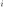 to unit ; then we have
and let be the weight attached to the link from unit 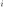 to unit ; then we have
where 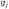 is a nonlinear activation function associated with unit and 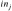 is the weighted sum of the inputs to unit .
each unit has an extra input from a dummy unit 0 that is fixed to +1 and a weight 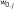 for that input. this allows the total weighted input to unit to be nonzero even when the outputs of the preceding layer are all zero. with this convention, we can write the preceding equation in vector form:
where 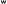 is the vector of weights leading into unit (including ) and  is the vector of inputs to unit (including the +1)
training a neural network consists of modifying the network’s parameters so as to minimize the loss function on the training set. in principle, any kind of optimization algorithm could be used. in practice, modern neural networks are almost always trained with some variant of stochastic gradient descent.
is the vector of inputs to unit (including the +1)
training a neural network consists of modifying the network’s parameters so as to minimize the loss function on the training set. in principle, any kind of optimization algorithm could be used. in practice, modern neural networks are almost always trained with some variant of stochastic gradient descent.
here, the goal is to minimize the loss 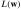, where represents all of the parameters of the network (all the weights). each update step in the gradient descent process looks like this: 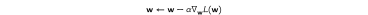
where 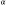 is the learning rate. for standard gradient descent, the loss function  is defined with respect to the entire training set. for stochastic gradient descent, it is defined with respect to a minibatch of 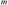 examples chosen randomly at each step.
is defined with respect to the entire training set. for stochastic gradient descent, it is defined with respect to a minibatch of 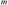 examples chosen randomly at each step.
the change in a single weight is defined as:
given a single training example 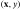, let 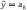 of the output layer. and  are both constant throughout the back-propagation process (independent of other variables), as we're really just trying to get the output to be as close to as possible on future feedforwarding runs.
are both constant throughout the back-propagation process (independent of other variables), as we're really just trying to get the output to be as close to as possible on future feedforwarding runs.
denoting the output layer by 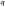, the output of an aribtrary unit 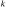 in the output layer is defined as: such that a superscript denotes the number of the layer that an expression is associated with.
assuming the squared cost function (which we would usually denote by 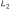 but here im using for something else), the output of the cost function for the -th unit in the output layer would be:
after the first application of the derivative chain rule to the cost function with respect to the weight that connects an arbitrary unit in the last hidden layer to an arbitrary unit in the output layer we get:
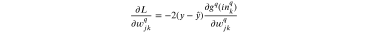
a weight that is between a layer 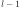 and is denoted by 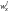 and not 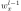 because it actually belongs to the th layer, even if it comes out of the th layer, this means that weights with a superscript of 1, e.g. 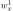 arent defined, because the first layer (input layer) has no weights.
applying the chain rule again we get: 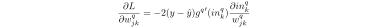 we apply the chain rule again to get the final gradient formula for 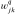:
during backpropagation, a part of a weights gradient, which we define as perceived error or a delta, is back-propagated to preceding layers in the network because it appears in the formulas of the partial derivatives for weights that exist in these previous layers, we denote by 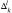 the perceived error of the -th unit in the -th layer. in the case of a unit in the output layer, its a simple formula:
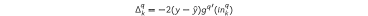
which is, as you might've noticed, just a part of the equation eq-fnn-w-derivative, the beginning of the expression, 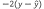, doesnt change, but as we move backwards through the layers, the pattern in the second part of the equation 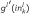 repeats over and over again (demonstrated in exa-fnn-1), which is why the concept of a perceived error is quite helpful. with this in mind, the perceived error of a unit in the last hidden layer 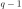 would be:
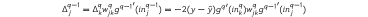
where refers to the number of the unit in the succeeding layer that the back-propagated gradient message originated from.
and in general form, the perceived error for an arbitrary unit in an arbitrary hidden layer , is defined as:
where 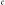 is some arbitrary unit in 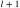 that the message was propagated back from.
for a weight that connects the unit of the hidden layer to the unit of the next hidden layer , the formula is defined in terms of the perceived error of the unit  (weight originates from unit 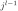 and connects to unit , so it belongs to ):
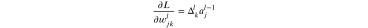
the back-propagation process passes messages back along each link in the network. at each node, the incoming messages are collected and new messages are calculated to pass back to the next layer.
(weight originates from unit 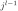 and connects to unit , so it belongs to ):
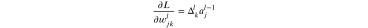
the back-propagation process passes messages back along each link in the network. at each node, the incoming messages are collected and new messages are calculated to pass back to the next layer.
overall, the process of learning the weights of the network is usually one that exhibits diminishing returns. we run until it is no longer practical to decrease the test error by running longer. usually this does not mean we have reached a global or even a local minimum of the loss function. instead, it means we would have to make an impractically large number of very small steps to continue reducing the cost, or that additional steps would only cause overfitting, or that estimates of the gradient are too inaccurate to make further progress.
citation: (Peter Norvig, Stuart J. Russell, 2020) consider the following network
 coupling multiple units together into a network creates a complex function that is a composition of the algebraic expressions represented by the individual units. for example, the network above represents a function 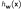, parameterized by weights , that maps a two-element input vector to a scalar output value . the internal structure of the function mirrors the structure of the network. for example we can write an expression for the output as follows:
coupling multiple units together into a network creates a complex function that is a composition of the algebraic expressions represented by the individual units. for example, the network above represents a function 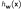, parameterized by weights , that maps a two-element input vector to a scalar output value . the internal structure of the function mirrors the structure of the network. for example we can write an expression for the output as follows:
thus, we have the output expressed as a function of the inputs and the weights.
we generally use 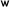 to denote a weight matrix; 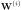 denotes the weights in the i'th layer, let 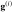 denote the activation functions in the i'th layer, then, for example, an entire network of 1 input layer, 1 hidden layer, and an output node can be written as follows:
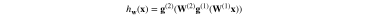
for the network to learn, we need to gradually adjust the weights to fit the learning data, using the gradient descent algorithm
first we apply the loss function, for simplicity the squared loss function is used here, we will calculate the gradient for the network we proposed with respect to a single training example . (for multiple examples, the gradient is just the sum of the gradients for the individual examples.) the network outputs a prediction 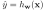 and the true value is , so we have
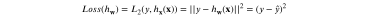
we compute the gradient of the loss with respect to the weights, we use the chain rule, we'll start with the easy case: a weight such as 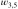 that is connected to the output unit. we operate directly on the network-defining expressions:

the slightly more difficult case involves a weight such as 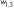 that is not directly connected to the output unit. here, we have to apply the chain rule one more time. the first few steps are identical, so we omit them:
![\begin{align*}
\frac{\partial}{\partial w_{1,3}}Loss(h_{\brm{w}}) &= -2(y-\hat y)g'_5(in_5)\frac{\partial}{\partial w_{1,3}}(w_{0,5}+w_{3,5}a_3+w_{4,5}a_4)\\
&= -2(y-\hat y)g'_5(in_5)w_{3,5}\frac{\partial}{\partial w_{1,3}}a_3\\
&= -2(y-\hat y)g'_5(in_5)w_{3,5}\frac{\partial}{\partial w_{1,3}}g_3(in_3)\\
&= -2(y-\hat y)g'_5(in_5)w_{3,5}g'_3(in_3)\frac{\partial}{\partial w_{1,3}}in_3\\
&= -2(y-\hat y)g'_5(in_5)w_{3,5}g'_3(in_3)\frac{\partial}{\partial w_{1,3}}(w_{0,3}+w_{1,3}x_1+w_{2,3}x_2)\\
&= -2(y-\hat y)g'_5(in_5)w_{3,5}g'_3(in_3)x_1
\end{align*}](ltx/82b1f6eb411.svg)
here, 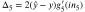 is the perceived error unit 5, and the gradient with respect to is just . this makes perfect sense: if 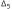 is positive, that means is too big (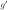 is always nonnegative); if 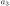 is also positive, then increasing will only make things worse, whereas if is negative, then increasing will reduce the error. the magnitude of also matters: if is small for this training example, then didnt play a major role in producing the error and doesnt need to be changed much.
we also know 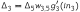, and the gradient for becomes just 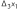. thus, the perceived error at the input to unit 3 is the perceived error at the input to unit 5, multiplied by information along the path from 5 back to 3. this phenomenon is completely general, and gives rise to the term back-propagation for the way that the error at the output is passed back through the network.
another important characteristic of these gradient expressions is that they have as factors the local derivatives . as noted earlier, these derivatives are always nonnegative, but they can be very close to zero (in the case of the sigmoid, softplus, and tanh functions) or exactly zero (in the case of ReLUs), if the inputs from the training example in question happen to put unit in the flat operating region. if the derivative is small or zero, that means that changing the weights leading into unit will have a negligible effect on its output. as a result, deep networks with many layers may suffer from a vanishing gradient–the error signals are extinguished altogether as they are propagated back through the network.
but how do we pass the data into the input layer? and what do the values coming out of the output layer mean? the following paragraphs explain how we encode data to pass it into the input layer, and how we treat the values resulting from the output layer.
the encoding of input data is usually straightforward, at least for the case of factored data where each training example contains values for  input attributes. if the attributes are boolean, we have input nodes; usually false is mapped to an input of 0 and true is mapped to 1, although sometimes -1 and +1 are used. numeric attributes, whether integer or real-valued, are typically used as is, although they may be scaled to fit within a fixed range; if the magnitudes for different examples vary enormously, the values can be mapped onto a log scale.
input attributes. if the attributes are boolean, we have input nodes; usually false is mapped to an input of 0 and true is mapped to 1, although sometimes -1 and +1 are used. numeric attributes, whether integer or real-valued, are typically used as is, although they may be scaled to fit within a fixed range; if the magnitudes for different examples vary enormously, the values can be mapped onto a log scale.
images do not quite fit into the category of factored data; although an RGB image of size pixels can be thought of as integer-valued attributes (typically with values in the range ), this would ignore the fact that the RGB triplets belong to the same pixel in the image and the fact that pixel adjacency really matters. of course, we can map adjacent pixels onto adjacent input nodes in the network, but the meaning of adjacency is completely lost if the internal layers of the network are fully connected. in practice, networks used with image data have array-like internal structures that aim to reflect the semantics of adjacency.
categorical attributes with more than two values are usually encoded using the so-called one-hot encoding. an attribute with possible values is represented by separate input bits. for any given value, the corresponding input bit is set to 1 and all the others are set to 0. this generally works better than mapping the values to integers.
on the output side of the network, the problem of encoding the raw data values into actual values for the output nodes of the graph is much the same as the input encoding problem. for example, if the network is trying to predict a variable named weather, which has values {sun,rain,cloud,snow}, we would use a one-hot encoding with four bits.
so much for the data values . what about the prediction ? ideally, it would exactly match the desired value . and the loss would be zero, and we'd be done. in practice, this seldom happens–especially before we have started the process of adjusting the weights. thus, we need to think about what an incorrect output value means, and how to measure the loss. in deriving the gradients, we began with the squared-error loss function. this keeps the algebra simple, but it is not the only possibility. in fact, for most deep learning applications, it is more common to interpret the output values as probabilities and to use the negative log likelihood as the loss function.
maximum likelihood learning finds the value of that maximizes the probability of the observed data. and because the log function is monotonic, this is equivalent to maximizing the log likelihood of the data, which is equivalent in turn to minimizing a loss function defined as the negative log likelihood. (taking logs turns products of probabilities into sums, which are more amenable for taking derivatives.) in other words, we are looking for that minimizes the sum of negative log probabilities of the examples:
in the deep learning literature, it is common to talk about minimizing the cross-entropy. we typically use the definition of cross-entropy with being the true distribution over training examples, , and being the predictive hypothesis . minimizing the cross-entropy by adjusting makes the hypothesis agree as closely as possible with the true distribution. in reality, we cannot minimize this cross-entropy because we do not have access to the true data distribution ; but we do have access to samples from , so the sum over the actual data in this equation approximates the expectation in the equation of cross-entropy.
to minimize the negative log likelihood (or the cross-entropy), we need to be able to interpret the output of the network as a probability. for example, if the network has one output unit with a sigmoid activation function and is learning a boolean classification, we can interpret the output value directly as the probability that the example belongs to the positive class. thus, for boolean classification problems, we commonly use a sigmoid output layer.
multiclass classification problems are very common in machine learning. for example, classifiers used for object recognition often need to recognize thousands of distinct categories of objects. natural language models that try to predict the next word in a sentence may have to choose among tens of thousands of possible words. for this kind of prediction, we need the network to output a categorical distribution–that is, if there are possible answers, we need output nodes that represent probabilities summing to 1.
To achieve this, we use a softmax layer, which outputs a vector of values given a vector of input values . The kth element of that output vector is given by
for a regression problem, where the target value is continuous, it is common to use a linear output layer–in other words, , without any activation function  .
.
many other output layers are possible.
initial common lisp implementation
this code uses common lisp (aswell as code/functions from the actual link itself, click it for those)
;; neural network class (defclass network () ((weights :initarg :weights :initform nil :accessor network-weights) (input-layer-size :initarg :input-layer-size :accessor network-input-layer-size) (output-layer-size :initarg :output-layer-size :accessor network-output-layer-size) (hidden-layer-sizes :initarg :hidden-layer-sizes :accessor network-hidden-layer-sizes) (learning-rate :initform 0.0005 :initarg :learning-rate :accessor network-learning-rate))) (defmethod network-feedforward ((nw network) x) "pass the vector x into the network, x is treated as the input layer, the activations of the entire network are returned" (let ((previous-layer-activations x) (network-activations (list x)) (network-unsquashed-activations (list x))) (loop for weights-index from 0 below (length (network-weights nw)) do (let* ((weights (elt (network-weights nw) weights-index)) (layer-activations (list->vector (make-list (length (elt weights 0)) :initial-element 0)))) (loop for i from 0 below (length previous-layer-activations) do (let ((previous-unit-activation (elt previous-layer-activations i)) (previous-unit-weights (elt weights i))) (setf layer-activations (map 'list (lambda (weight activation) (+ activation (* previous-unit-activation weight))) previous-unit-weights layer-activations)))) (setf previous-layer-activations (map 'list #'sigmoid layer-activations)) (setf network-activations (append network-activations (list previous-layer-activations))) (setf network-unsquashed-activations (append network-unsquashed-activations (list layer-activations))))) (values (list->vector network-activations) (list->vector network-unsquashed-activations)))) (defmethod network-generate-weights ((nw network)) "generate random weights based on the sizes of the layers" (setf (network-weights nw) (loop for i from 0 below (1+ (length (network-hidden-layer-sizes nw))) collect (let* ((layer-sizes (append (list (network-input-layer-size nw)) (network-hidden-layer-sizes nw) (list (network-output-layer-size nw)))) (layer-size (elt layer-sizes i)) (next-layer-size (elt layer-sizes (1+ i)))) (loop for j from 0 below layer-size collect (loop for k from 0 below next-layer-size collect (generate-random-weight)))))) ;; convert weights from nested lists to nested vector for fast access (setf (network-weights nw) (list->vector (network-weights nw)))) (defmethod print-object ((nw network) stream) (print-unreadable-object (nw stream :type t) (format stream "total weights: ~a" (reduce #'* (append (list (network-input-layer-size nw) (network-output-layer-size nw)) (network-hidden-layer-sizes nw)))))) (defun generate-random-weight () (/ (- (random 2000) 1000) 1000)) (defun make-network (&key input-layer-size hidden-layer-sizes output-layer-size learning-rate) (let ((nw (make-instance 'network :input-layer-size input-layer-size :hidden-layer-sizes hidden-layer-sizes :output-layer-size output-layer-size :learning-rate learning-rate))) (network-generate-weights nw) nw))
while implementing backpropagation i faced a challenge(s), can i simply iterate through the layers one by one like i did in network-feedforward and just handle them each at a time? at first i thought i couldnt, because i need to go through each possible path from the output layer to the input layer and update each weight, each weight's gradient depends on the gradient for the weight preceding it in the path, but after alot of thinking i realized that i could just store the gradients of each matrix of weights between 2 layers and update the gradient matrix as we go, this would probably work i think, but im more curious about how i would go about finding all paths and operating on them in the way i described.
we have a variable number of layers , we definitely could iterate through these layers but on each iteration we only have access to the current layers units, and to construct a path from the input layer to the output layer we need to find units, one from each layer, so this cannot be done by a simple for loop that iterates through the layers one at a time, what about nested loops (one for each layer)? but how are we supposed to nest loops? this isnt possible, so maybe recursion could help?
say we did use recursion, and on each recurrence we hopped backwards into the previous layer in the network, how are we supposed to return the different units from a layer to a function call? well we dont need to, we could just call the function on the many units we have in that previous layer and pass it an index to say which unit we're referring to.
(defmethod network-train ((nw network) xs ys) "train on the given data, xs is a list of vectors, each vector is treated as an input layer to the network, and ys is a list of vectors, each vector representing the output layer corresponding to the vector in xs thats at the same index" (loop for i from 0 below (length xs) do (let* ((x (elt xs i)) (y (elt ys i)) (layer-index (1+ (length (network-hidden-layer-sizes nw))))) (multiple-value-bind (activations unsquashed-activations) (network-feedforward nw x) (loop for unit-index from 0 below (network-output-layer-size nw) do (network-back-propagate nw layer-index unit-index (* 2 (- (elt (elt activations layer-index) unit-index) (elt y unit-index))) activations unsquashed-activations)))))) (defmethod network-back-propagate ((nw network) layer-index unit-index gradient activations unsquashed-activations) "backpropagate the error through the network, each layers gradients depend on those of the layer succeeding it in the network" (let* ((predecessor-layer-weights (elt (network-weights nw) (1- layer-index))) (weights-into-unit (map 'vector (lambda (predecessor-unit-weights) (elt predecessor-unit-weights unit-index)) predecessor-layer-weights)) (unit-activation (elt (elt activations layer-index) unit-index)) (unit-input (elt (elt unsquashed-activations layer-index) unit-index))) (loop for predecessor-unit-index from 0 below (length predecessor-layer-weights) do (let* ((weight (elt weights-into-unit predecessor-unit-index)) (predecessor-unit-activation (elt (elt activations (1- layer-index)) predecessor-unit-index)) (gradient-to-back-propagate (* gradient (sigmoid-derivative unit-input) weight)) (actual-gradient (* gradient (sigmoid-derivative unit-input) predecessor-unit-activation)) (weight-change (* (network-learning-rate nw) actual-gradient))) (if (> layer-index 1) (network-back-propagate nw (1- layer-index) predecessor-unit-index gradient-to-back-propagate activations unsquashed-activations)) (setf (elt (elt (elt (network-weights nw) (1- layer-index)) predecessor-unit-index) unit-index) (- weight weight-change))))))
lets try training on some simple data
(defparameter nw (make-network :input-layer-size 3 :hidden-layer-sizes '(2) :output-layer-size 1 :learning-rate 0.01)) (loop for i from 0 below 10000 do (network-train nw '((0 0 1) (1 1 1) (1 0 1) (0 1 1)) '((0) (1) (1) (0)))) (multiple-value-bind (activations unsquashed-activations) (network-feedforward nw '(1 1 0)) (print activations)) (multiple-value-bind (activations unsquashed-activations) (network-feedforward nw '(0 1 0)) (print activations))
#(#(1 1 0) #(0.84486073 0.013950213) #(0.9093194)) #(#(0 1 0) #(0.59563345 0.5919403) #(0.2278899))
it predicts correctly that the first number is the output number using this code, i was getting 125k weight updates in 0.01 seconds (only 1 thread, no gpu), which i think is as far as i can get in terms of efficiency without some more advanced matrix algorithms, i tried python and got 1m (simple addition) operations in 0.04 seconds:
~ λ time python -c ' i=1 for i in range(999999): i = i + 1 print(i)' 999999 python -c ' i=1; for i in range(999999): i = i + 1; print(i)' 0.04s user 0.00s system 98% cpu 0.045 total
we need a method to keep to keep track of loss, aswell as visual feedback would be nice, see common lisp graphics which ill be also using here
(defmethod network-test ((nw network) xs ys) "test the given data (collection of vectors for input/output layers), return the total loss" (let ((loss 0)) (loop for i from 0 below (length xs) do (let* ((x (elt xs i)) (y (elt ys i))) (multiple-value-bind (activations unsquashed-activations) (network-feedforward nw x) (let* ((output-layer (elt activations (1- (length activations)))) (example-loss (expt (vector-sum (vector-sub y output-layer)) 2))) (incf loss example-loss))))) loss))
we can use this function to plot the loss function after each epoch:
(defun feedforward-network-first-test () (defparameter *train-in* '((0 0 1) (1 1 1) (1 0 1) (0 1 1))) (defparameter *train-out* '((0) (1) (1) (0))) (defparameter *win* (make-instance 'window :width 800 :height 800)) (defparameter *nw* (make-network :input-layer-size 3 :hidden-layer-sizes '(2) :output-layer-size 1 :learning-rate 0.01)) (let* ((loss-history '()) (epochs 10000) (axis (make-axis :min-x (/ (- epochs) 10) :max-x epochs :min-y -0.1 :pos (make-point-2d :x 0 :y 0) :width (window-width *win*) :height (window-height *win*)))) (loop for i from 0 below epochs do (network-train *nw* *train-in* *train-out*) (let ((loss (network-test *nw* *train-in* *train-out*))) (setf loss-history (append loss-history (list loss))) (if (> loss (axis-max-y axis)) (setf (axis-max-y axis) (* loss 1.1))))) ;; (setf (axis-min-y axis) (* loss 0.1))))) (let* ((loss-plot (make-discrete-plot :points (map 'vector (lambda (loss epoch) (make-point-2d :x epoch :y (elt loss-history epoch))) loss-history (loop for i from 0 below epochs by 100 collect i))))) ;; by 100 to reduce number of points to plot (axis-add-renderable axis loss-plot) (window-add-renderable *win* axis) (window-run *win*))))
although notice that here we're testing the network on the same data we trained it with, which generally isnt a good measure of the performance of the network, but this is just an example of how we can keep track of a property
making use of gpu
before implementing this i started experimenting with cuda in common lisp, one unfortunate thing is that cl-cuda doesnt allow using arbitrary data types like you would have in C with structs, we're gonna have to live with arrays of floats on the gpu
at first i was gonna implement the most straightforward approach, which is to run every backpropagation/feedforward operation by a single gpu thread, so that if we have 256 gpu threads, we'd be doing 256 backpropagation operations in parallel whereas on the cpu (with a single thread) we'd be doing only 1, i thought this would definitely work, until i actually thought about it and then realized, how the hell can this be a thread-safe process? each thread is modifying every weight in the network and many threads are running at once, it would be a nightmare to actually use such an approach, and a miracle if it even works as intended, so i had to think of something else, something thread-safe.